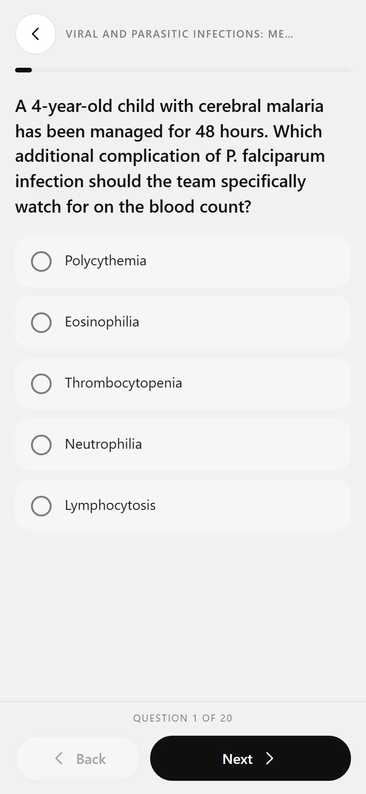
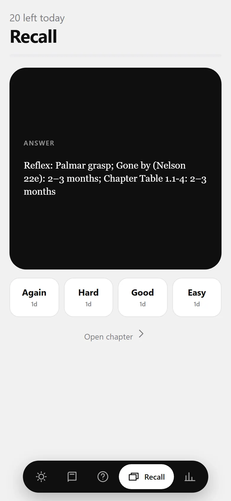

The passage the explanation is built on is lit up for you.


01
The shift ends at seven.
You own the textbooks. What you do not have is time. So every chapter reads like a book you can finish in the gaps: key points first, headings you can scan, tables that slide sideways, boxes that tell you what matters.
Core edition for a fast pass. Full edition when you want the whole chapter.
02
Then it explains it to you.
Tap Lecture. A teacher, or a clinician at the bedside, talks you through the chapter while a whiteboard writes the short version, line by line. Stuck on a passage? Select it and tap Explain.
Abbreviations are spoken in full the first time, so “LSCS” becomes “lower segment caesarean section”.
03
Every claim has a page.
When the lecture leans on a textbook, the page opens beside it with the passage highlighted. Bring your own copy of Nelson or the Red Book; it stays on your phone and the app finds the line.
Trust, but verify: the source is one tap away, not buried.
Reference pagep. 1966
04
Practise like it counts.
Quick sets, full 100-question mock papers, and 30 timed TOACS stations. A question you miss comes back just as you are about to forget it. Answers that are not yet confirmed carry a Draft label; they are never hidden.
05
Small cards, spaced out.
Mnemonics, at-a-glance summaries and picture cards from real clinical photographs, scheduled by how well you knew them last time. Five minutes on a bus is a real revision session.
Works without signal. Your notes, highlights and progress stay on your phone.
What is inside
The whole syllabus, in your pocket.
70Chapters
3,437Questions
914Recall cards
30TOACS stations
61Algorithms
How it is built
Plain about what it is, and what it is not.
You are trusting this with your preparation. Here is how it earns that.
01
Drafts are labelled
Some answer keys are not yet confirmed against a source. They say Draft on the question. You can filter to verified keys only.
02
Sources, not vibes
Each teaching point is tied to a textbook page. Where the chapter and the book disagree, the lecture says so, instead of picking quietly.
03
A study aid, not advice
Doses and thresholds are being reviewed by clinicians. Use it to learn and to revise, and follow your unit's protocols for patients.
Early access
Be there when the doors open.
Access is by invitation while we finish the last reviews. Members receive their install link privately, by email.
Founding access
Pricing announced soon
Everything in the app for the length of your exam preparation, plus every update.